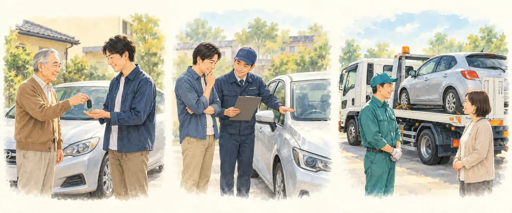
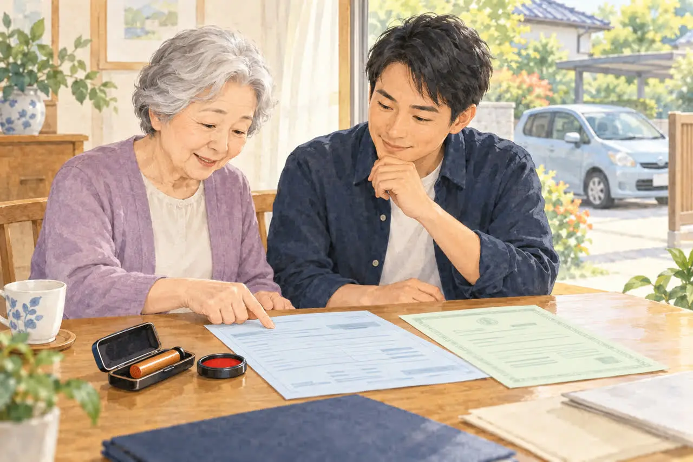
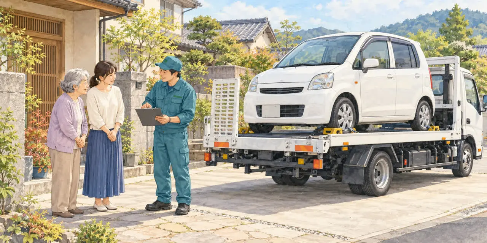

親御さんの車のことでお悩みの方へ
免許を返納した親の車、
どう処分する？
公開

こんにちは、東京都足立区江北で自動車解体・廃車買取をしている「大崎商店 環七店」です。
「父が免許を返納したけれど、車は駐車場に残ったまま」
「母はもう運転しないのに、車の名義も保険もそのままになっている」
免許返納後の車について、こうしたご相談をいただくことがあります。親御さんが免許を返納したあと、残った車をどうするかは、多くのご家族が悩むところです。
この記事では、免許を返納した親御さんの車を手放すときの選び方と、手続きの流れ、準備しておきたいものを、やさしくご紹介します。
乗らなくなった車にも維持費がかかります
「いつか誰かが乗るかもしれない」と、車をそのまま置いておくご家族も少なくありません。でも、乗らない車にも、次のようなお金がかかり続けます。
- 自動車税・軽自動車税：原則として毎年4月1日時点の所有者に課税されます（所有権が販売店などに留保されている場合は使用者）
- 駐車場代：月極駐車場を借りている場合
- 保険料：任意保険を続けている場合
- 整備・車検の費用：再び公道で使う場合は、車の状態や車検の有効期間に応じた整備・更新が必要です
また、長く動かさない車は、バッテリーが上がったり、タイヤの空気が抜けたりして、だんだん傷んでいきます。値段がつく車でも、置いておくほど価値が下がってしまうことがあります。
免許の返納だけで、車の登録や保険契約が自動的に変わるわけではありません。「今後は誰も乗らない」とわかったら、維持費を確認しながら手放し方を考えてみましょう。
手放し方は大きく3つ

免許を返納した親御さんの車の手放し方は、主に次の3つです。
① 家族や親戚が引き継ぐ
まだ新しく状態の良い車で、ご家族に乗る人がいる場合は、名義を変えて引き継ぐ方法があります。ただし、名義変更の手続きや、駐車場・保険の見直しが必要になります。
② 中古車として売る
年式や走行距離、車種、状態などによっては、中古車として売却できます。古い車でも値段がつく場合があるため、処分を決める前に査定を受けるのも一つの方法です。
③ 廃車にする（廃車買取に出す）
修理費が高くつく車や、長く動かしていない車などは、廃車・廃車買取も選択肢になります。年式や走行距離だけで判断せず、車の状態や買取条件を確認して選びましょう。
「古い車だから、処分にお金がかかるのでは？」と心配される方も多いですが、大崎商店では車種や状態によって買取ができ、その場で現金をお支払いできることもあります。まずは一度ご相談ください。
親御さんとの話し合いも大切に
免許の返納は、親御さんにとって大きな決断です。長年乗ってきた車には、たくさんの思い出がつまっています。車を売却・廃車にする際も、まずは所有者である親御さんの意思を確認しましょう。
「もう乗らないんだから」と急いで手放すよりも、
- 車の中に残っている大切なもの（写真、お守り、書類など）を一緒に確認する
- 最後に洗車をしたり、写真を撮ったりする
- 「いつ頃手放すか」を一緒に決める
といった時間をとると、親御さんの気持ちにも寄り添いやすくなります。通院や買い物など、車を手放したあとの移動手段も一緒に確認しておくと安心です。
廃車にするときに必要なもの（普通車・軽自動車）

車の持ち主（車検証の「所有者」）が親御さんの場合、手続きには親御さん本人の書類が必要です。普通車（軽自動車を除く）を当店に廃車依頼される場合は、基本的に次のものをご用意・確認ください。
- □ 車検証の原本
- □ ナンバープレート（前後2枚）の有無
- □ 親御さん（所有者）の印鑑証明（抹消登録の申請時点で発行から3か月以内）
- □ 親御さん（所有者）の実印（印鑑証明に登録されているもの）
当店へのお引き渡し・手続きに使用する委任状や譲渡証明書は、当店で用意します。引き取り時に内容をご確認いただき、必要事項の記入と実印の押印をお願いします。書類の準備や当日の立ち会いについては、ご相談時に確認します。
電子車検証の場合も、原本をご用意ください。「自動車検査証記録事項」の用紙をお持ちであれば、あわせてご用意いただくと確認がスムーズです。ナンバープレートの取り外し方法は、ご相談時にご案内します。
抹消登録などの手続きは当店が代行します。通常は、親御さんやご家族が運輸支局へ出向く必要はありません。基本の書類は「廃車に必要な書類チェックリスト（普通車）」でも詳しくご紹介しています。
こんなときは事前にご相談ください
- 車検証の住所と、親御さんの今の住所がちがう（引っ越しをした）
- 所有者が、ディーラーやローン会社になっている
- 親御さんが入院・施設入所中で、書類の準備や立ち会いが難しい
- 親御さんが手続きの内容を理解し、意思を示すことが難しい
- 車検証の氏名が現在の氏名と異なる
- 車検証やナンバープレートが見つからない（車検証をなくしたけど廃車できる？）
- すでに一時抹消登録をしている
住所が異なる場合は住所のつながりを示す住民票の写しや戸籍の附票など、所有者が販売店・ローン会社の場合は所有者側の書類などが必要になります。書類を取りに行く前にお電話いただければ、状況に応じた準備をご案内します。
なお、ご家族であっても、所有者の同意や必要な代理権を確認せずに処分を進めることはできません。親御さんが意思を示すことが難しい場合は、ご家族だけで記入・押印を進めず、成年後見人などの関与が必要かも含めて、事前にご相談ください。
軽自動車の場合は、基本的に次の2点をご用意ください。
- □ 車検証の原本（電子車検証の場合も原本が必要です）
- □ ナンバープレート（前・後ろの2枚）（取り外しについては当店にご相談ください）
軽自動車では、印鑑登録証明書や実印は不要です。所有者が販売店やローン会社などになっている場合は、事前に当店へお知らせください。詳しくは「軽自動車の廃車に必要な書類・準備チェックリスト」もご覧ください。
忘れずにしておきたい手続き
車を手放すときには、廃車の手続きのほかにも、いくつか確認しておきたいことがあります。
自動車税
普通車は、年度の途中で抹消登録をすると、抹消登録した月の翌月から年度末までの自動車税が月割りで減額されます。すでに納付済みであれば還付の対象になりますが、未納の税金がある場合は、その支払いに充てられることがあります。軽自動車税には、年度途中の廃車による月割りの還付はありません。
基準になるのは、車を引き渡した日ではなく、抹消登録が完了した日です。 また、中古車としての売却や家族への名義変更だけでは、普通車の自動車税が月割りで還付されるわけではありません。
翌年度の課税を避けるために廃車にする場合は、3月末までに抹消登録を完了する必要があります。年度末は手続きが混み合うため、引き取りの日だけでなく、登録の完了予定も早めに確認しましょう。普通車と軽自動車の税金の違いは「車検切れの車で気をつけたいお金のこと」の表でもまとめています。
重量税の還付や、自賠責保険の返戻金の条件は、「廃車にするとお金は戻ってくる？自動車税・重量税・自賠責の還付金」の記事でくわしくご紹介しています。
保険
- 自賠責保険：廃車などの解約条件を満たし、解約日から満期日まで1か月以上残っている場合は、解約返戻金の対象になります。廃車だけで自動的に解約されるわけではないため、必要書類と受付方法を加入先に確認しましょう。
- 任意保険：引き渡し・引き継ぎの日程に合わせて、契約の変更や解約を相談しましょう。条件を満たせば「中断証明書」で等級を一定期間保存できる場合もあります。将来ご家族が利用できるかは、続柄や同居状況などによって異なるため、解約前に加入先へ確認してください。
そのほか
- 月極駐車場の解約（予告期間と車の引き取り日を確認）
- ETCカードを車から抜く
- カーナビの登録住所・電話帳、ドライブレコーダーの記録などを確認・削除する
- 車の中の荷物を片付ける
親御さんと離れて暮らしている場合
「親は足立区の実家に住んでいて、自分は遠くに住んでいる」というご家族も多いと思います。
離れて暮らしている場合は、先に名義や書類を確認しておくと、実家へ足を運ぶ回数を減らしやすくなります。
- まずはお電話で相談
車検証の写真やメモを手元に用意して、車種・年式・置いてある場所をお伝えください。 - 書類の準備
必要な書類と取得方法を確認します。足立区では、印鑑証明を代理人が窓口で取得する場合、親御さんの「印鑑登録証」を持参し、住所・氏名を正確に記入する必要があります。委任状を持参するだけでは取得できません。他の自治体では、そちらの案内をご確認ください。 - 引き取りの日を決める
ご家族が実家に帰れる日や、親御さんが立ち会える日に合わせて日程を調整します。
必要な書類やご本人の意思確認が整っていれば、引き取りと書類の記入・押印を同じ日に進められる場合があります。「この日しか実家に帰れない」という場合も、まずは日程をご相談ください。当日の流れは「廃車のご依頼から現金お支払いまでの流れ」でもご紹介しています。
運転経歴証明書のことも知っておきましょう
東京都内にお住まいで、免許を自主返納した日から5年以内などの条件を満たす方は、「運転経歴証明書」を申請できます。本人確認書類として利用できますが、必要な書類は手続き先ごとに確認しましょう。
運転経歴証明書を見せると、お店の割引などの特典を受けられることもあります。申請場所や受付時間、特典の内容は、警視庁の案内をご確認ください。
動かなくなった車も、レッカーで引き取ります

「返納してから何か月も乗っておらず、エンジンがかからない」
「バッテリーが上がって動かない」
こうした車でも、大崎商店ではレッカー車で引き取りに伺います。ご家族が車を運転して持ってくる必要はありません。動かない車の引き取りについては「エンジンがかからない車でも引き取ってもらえる？」で、事例とあわせてご紹介しています。
親御さんの車のことは、大崎商店にご相談ください
免許を返納したあとの車をどうするかは、ご家族の暮らしや親御さんの気持ちに合わせて考えたいものです。「何から始めればいいかわからない」という段階でも、お気軽にご相談ください。
- 廃車手続きの代行手数料は無料
- 引き取りは無料：買取価格がつかない車も、環七店から車で片道約30分圏内は無料です。圏外でも、所在地と車の状態によっては無料で伺えます（事前にご案内します）
- 事故車や動かない車もレッカー車で引き取り
- 車種や状態によっては、引き取り当日その場で現金買取も可能
長年、親御さんの暮らしを支えてきたお車を、丁寧にお引き取りします。
電話で相談する 03-3854-4141大崎商店 環七店
電話：03-3854-4141
〒123-0872
東京都足立区江北7丁目1−3
営業時間：月〜土 10:30〜18:00
休業日：日曜・祝日
環七沿い／舎人ライナー
西新井大師西駅
大崎商店 入谷店
電話：03-3899-2837
〒121-0836
東京都足立区入谷7丁目5−11
営業時間：月〜土 9:30〜17:30
休業日：日曜・祝日・第2土曜
お電話の際は、「免許を返納した親の車について」とお伝えください。車検証をお手元にご用意いただくと、ご案内がスムーズです。
挿絵はイメージです。※参考：東京都主税局・自動車税／足立区・印鑑登録証明書／損保ジャパン・自賠責保険の解約返戻金／損保ジャパン・任意保険の中断手続き